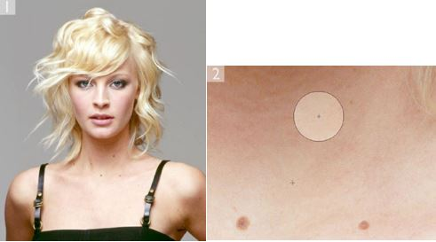
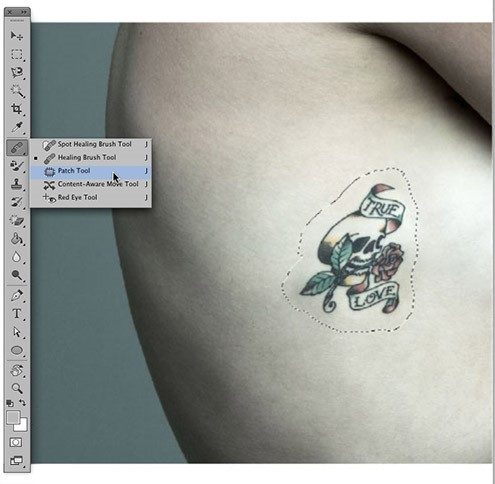
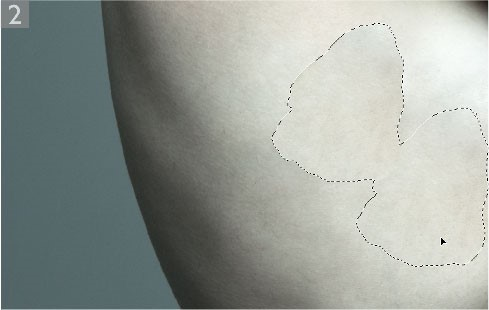
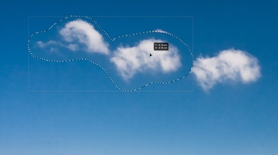
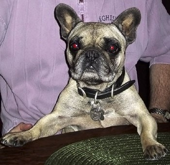
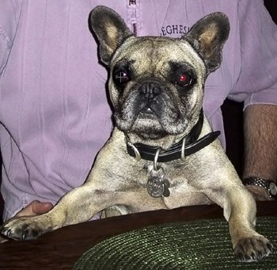
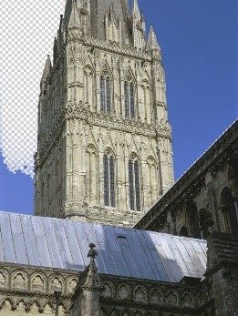
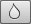
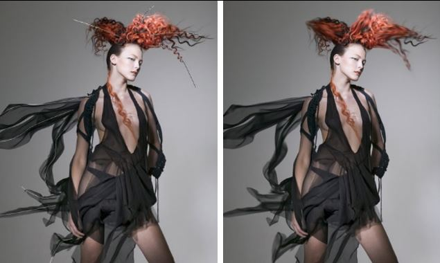
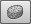

-
Spot healing brush
The spot healing brush is the default healing tool in Photoshop and can be used to clone areas from an image and blend the pixels from the sampled area seamlessly with the target area.
Category: Retouching Tools -
Healing brush
The healing brush enables you to clone areas from an image and blend the pixels from the sampled area seamlessly with the target area.
 Category: Retouching Tools -
Patch tool
The patch tool uses the same complex algorithm as the healing brush to carry out its blend calculations, but the patch tool works with selection-defined areas instead of a brush.
  Category: Retouching Tools -
Content-aware move tool
A content-aware move tool has now been added to the healing group of tools. This tool works in a similar way to the patch tool in Destination mode, except it allows you to either extend a selected area or move it and fill the initial selected area.
 Category: Retouching Tools -
Red eye tool
The red eye tool in Photoshop is an easy-to-use tool for removing red eye from photographs that have been taken with a direct flash source.
  Category: Retouching Tools -
The clone stamp tool
The clone stamp tool is used to sample pixels from one part of the image to paint in another. This is an essential tool for retouching work such as spotting and general image repairing.
 Category: Retouching Tools
Category: Retouching Tools
-
Eraser tool
The eraser tool behaves in two ways depending on whether it is being used on the background or a layer. When used on the background layer, it removes pixels from an image, replacing them with the current background swatch color.
Category: Retouching Tools -
Background eraser tool
The background eraser tool erases the pixels based on the pixel colors sampled by the tool. The sampling options are accessed via the buttons in the Options bar next to the brush preset picker.
Category: Retouching Tools -
Magic eraser tool
The magic eraser tool works like the paint bucket tool in reverse. It can be used to erase neighboring or ‘similar’ pixels, based on the pixel color value where you click. It’s a very basic ‘one-shot’ tool and you should probably avoid using it if you can since the background eraser offers more adjustable control over how the pixels are erased.
 Category: Retouching Tools -
Blur tool 
The blur tool can be used to apply localized blurring to a photo, soften portions of an image, or smooth over-sharp edges in an image or alpha channel mask.
Category: Retouching Tools -
Sharpen tool
The sharpen tool allows you to apply localized sharpening effects to an image. Prior to Photoshop CS5 there were no circumstances where one would suggest using the sharpen tool since the outcome was pretty ugly looking sharpening artifacts.
Category: Retouching Tools -
Smudge tool
The smudge tool is an interesting painting tool to work with because it can be used to smear pixels the same way as one might mix paints together.
 Category: Retouching Tools -
Dodge tool and Burn tool
The dodge and burn tools in Photoshop offer you a limited amount of dodge and burn control, although these tools are not really suitable for working with large areas of an image. Having said that, the dodge and burn tools have been improved since Photoshop CS4 such that you can now use them to more effectively dodge and burn the pixels direct without producing the rather ugly effect.
Category: Retouching Tools -
Sponge tool 
The dodge and burn tools in Photoshop offer you a limited amount of dodge and burn control, although these tools are not really suitable for working with large areas of an image. Having said that, the dodge and burn tools have been improved since Photoshop CS4 such that you can now use them to more effectively dodge and burn the pixels direct without producing the rather ugly effect.
Category: Retouching Tools